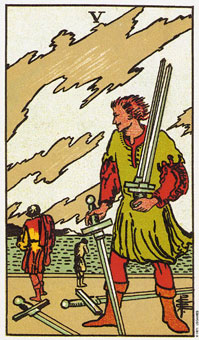

宝剑五意味争吵和紧张，而且解决的机会十分渺茫。
在宝剑五这张牌中，有五个人在争吵，而牌面上我们还可以看到三个人。在前面位置的这个人赢得了这场战役，然而整个战争究竟鹿死谁手还未定，因为事情还没有真正的解决之道出现。画面上的云反映出一种充满情绪、愤怒、恐惧的气氛。
这张牌意味着争辩、冲突和失落。虽然打赢了这次战役，却失去了更多东西，包括学习和成长的机会。这场战斗可能是两性关系、和或关系，或是工作环境中，两个或两个以上的人的战斗。关于事情该如何进行，彼此之间的意见不能协调，而使紧张的气氛上升。当冲突越来越强烈时，某一方透过武力、胁迫或技巧性的操作来得到他们想要的东西。他们可能会因此小胜一回合，但却失去了其他与此事有关者的尊敬和合作意愿。
宝剑五暗示妥协而非解决。没有解决的问题还是有再回来的可能，它可能会以不同的面貌降临，而且由持续出现的可能，直到整个时间解决为止。“要是我能掌握这一切的话，该有多好!”正是这张牌所代表的态度。
所有塔罗牌的五都有一种共同的意义。正立的五通常象征心胸狭窄，而倒立的五则意味着心胸开阔。
大体上的意义
宝剑五这张牌代表争吵、紧张和冲突，这可能使指你与自己内在的交战，或和你周遭人的不协调。假如这个冲突是指你和别人的，则其前提很有可能来自你的思想。在这种冲突的情况下，每个人对于事情的解决方法都各有见地，却没有人愿意聆听他人的心声。当一个人尝试这要去说服另一个人采纳自己的方法时，第二个却在想，轮到他发言时，他打算说些什么。所有相关的人之间根本缺乏真正的联系或沟通。
在事业的分析方面，五这张牌意味着你有很快离开工作或转变职业的倾向。五是一张在困难的环境底下就会离开的牌。这群人在目前的工作当中并不是一个团队。这张牌带来的改变是强迫性的、不寻常的，而且在日后当悬而未决的问题以另一种姿态出现时，则有可能需要做更多的改变。
两性关系上的意义
在两性关系的分析方面，宝剑五这张牌意味分离、冲突和失落。两个人或更多人(如果亲戚或朋友牵连在内的话)，都已经决定如何做一件事，但大家的决定却都不一样。除非每个人都愿意听听别人怎么说，否则事情是不可能会有真正结果的。
在这种情形下，不论是在肉体、情绪或精神上大家都被卷进这场纷争。也许这种冲突已经不是第一次出现了，而且每个人都有可能因先前的冲突而留下若干未解的心结。错综复杂的前因后果使得明确的沟通更显困难。
倒立的宝剑五
倒立的宝剑五可能仍是一张代表不协调和分离的牌，不过在冲突之后，每个当事人回去反省他们的争执点和行为。当出现倒立的五时，表示有进行沟通的可能，因为这些相关人员的思想是比较开放的。
或许该市你解释对问题的看法，以及听听别人是如何看事情的时候了。现在整件事情的模式就摊在你面前了，而你也准备要对冲突的根本因素多负起些责任了。你并不是第一次处于这种情况，而且或许你正在做某些造成这种冲突的事情。
艾恩在占卜的过程中抱怨说，女人是不能被信任的。他相信一旦她们得到他完全的付出之后，便会离他而去，另觅伴侣。它最近五次的两性关系都是以悲剧收场，简直另他痛苦万分。
“你可别告诉我，我应该为这次关系的破裂负责任。她告诉我，她并不确定自己想要一份固定的关系。她说她想要分开几个礼拜，所以我们就间断了一些日子，而三个星期以后我去看她，她竟有了新男朋友，而且就住在她的房子里面!”
“所以你是在告诉我，你一点也不认为你应该为那次关系破裂负上一点点责任喽?”
“一点也没错。我仔细回想，在我的生命当中，根本就没有一个女人曾经给过我所需要的爱和关心，一个也没有。”
“有没有可能是你总是让自己去吸引哪些无法满足你需求的女人?或是你本身可能不容易让别人爱你?”
“或许吧。但那也不能合理化她的行为呀。”
“也许不能。不过，你最近的五次关系都是在非常艰难的情况下结束的，而最后一次更是既惊吓又伤害了你。或许你已经陷入无法满足情感需求的一种模式了。”